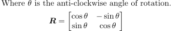
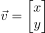
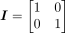
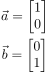
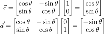
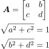
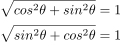
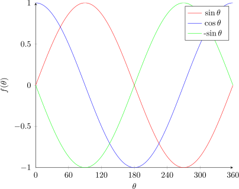
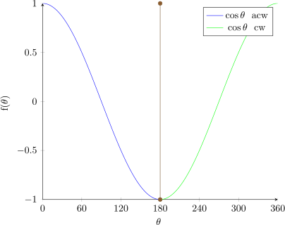
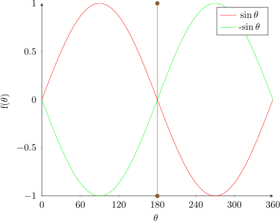

(9)
(10)
First of all, we can define the 2x2 matrix inversion in the variable R as:
|  | (1) (2) |
|  | (3) |
|  | (4) |
|  | (5) (6) |
|  | (7) (8) |
Using this function, we can give evidence of the dot product between two vectors.
The dot product is defined as such (where a and b are random variables):
| (9) (10) |
Alongside this proof, we have also managed to prove another fact: Given any 2d matrix, one can instantly tell if it’s a rotation matrix by the following test:
|  | (11) (12) (13) |
|  | (14) (15) |
Considering that a rotation is always going to be in the range 0 ≤ θ ≤ 360 and considering the 3 functions we use in the matrix R are sinθ, cosθ and -sinθ, we can plot these functions onto a graph:

Now, let’s consider what an anti-clockwise and clockwise rotation actually is. Because we know that the matrix R gives an anti-clockwise rotation, we know that 0 ≤ θ ≤ 180 is anti-clockwise, hence 180 ≤ θ ≤ 360 is clockwise.


But what does this actually mean for a mathematician? Well, it means, given the following rotation matrix:
We can see that B12 (the top right corner) is negative. Therefore, it is an anticlockwise rotation!
Now let’s take another matrix C:
![[ 1-- 1-]
√2 √2
C = -√1- 1√--
2 2](matrix_rotations19x.svg)
We can see that C21 (the bottom left corner) is negative. Therefore, it is a clockwise rotation!